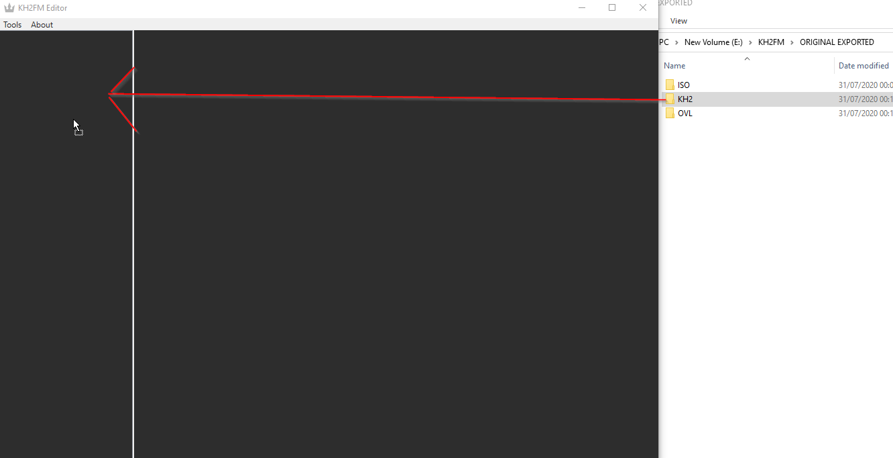

Made by: Osdanova
V. 0.2
* Version Content:
This is a pre-release version. It contains many bugs (It'll crash easily)
The main purpose of this release is to share with people the tool in order to study the various files of the game, using it as a viewer and hot testing field changes.
As such, play around with the files and report anything you discover at OpenKH's Discord server. Sharing is caring :)
That being said, feel free to use this tool for making your own mods.
Be aware that this version hasn't been tested, so many functions may not work or may cause the tool to crash.
Let me repeat just in case, this is a HEAVILY UNPOLISHED version. It will crash, buttons won't work and old pages will appear. (I don't know how to block that)
Lastly, I have no page for "Can't read this file", so if you double click something and a page doesn't open, the tool doesn't support it.
* Version 0.2 update:
Added support for more files. Fixed some errors.
-----------------------------------------------------------------------------------------------------------------------------
Hopefully I'll polish the tool more and make more releases, but this is taking really long and I have more things I want to do. (This is why I'm releasing this version)
In the best case scenario, I'll polish the tool, make the github where I store the code public and then I'll just go help with OpenKH for future tools.
-----------------------------------------------------------------------------------------------------------------------------
First, you need the extracted ISO.
Open the tool and drag your files in the left panel. You can also drag a folder and a treeview will show.
From here, you can open any supported file by double clicking. The supported files are:
Depending on the file, you may be able to directly edit a field (Note that some are non-writable translations of IDs)
You can Test your modifications in-game by using the TEST buttons.
Note that it will write the data on the offset written on "Test Offset". Default values are given on some files for an english patched ISO (Crazycatz's patch)
You can also Export the modified file using the "Export" button
ABOUT THE FILTER UTILITY: If you add a record to a table while filtering, make sure to click on Save current before unfiltering.
-----------------------------------------------------------------------------------------------------------------------------
Pretty self explanatory. Use Inventory to edit your inventory and stats to edit your stats.
NOTE: Stats requires you to open the game first or it'll crash. (V0.1)
This is because it reads PCSX2's memory when it's open.
-----------------------------------------------------------------------------------------------------------------------------
Sorry if this manual is bad, I don't have the will to work on a better one, this has been months in the making. (And it's not version 1.0, so deal with it >:C)
Also sorry if I forgot something for the manual. I'm sure you'll get the hang of it.
Big thanks to the community, specially to the people at OpenKH, who are always a great help.
Cheers.